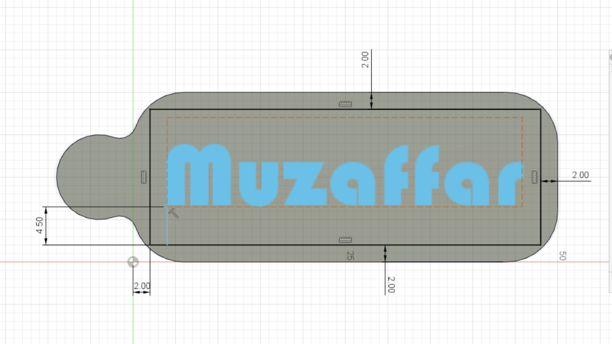
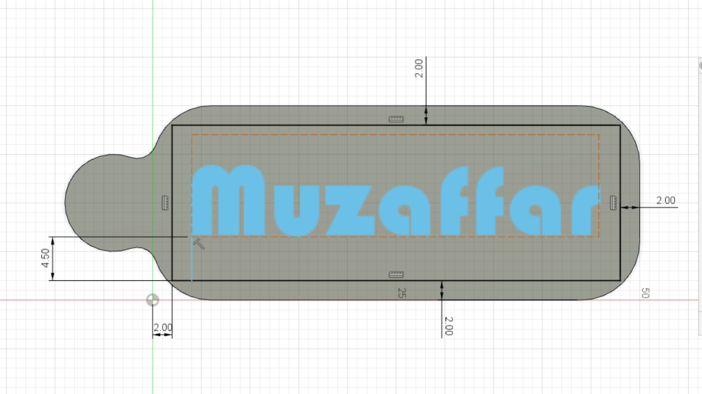

Computer Aided Machining:
Rastors
Rasters are basically a grid of individual pixels that collectively compose an image. Raster images are a collection of countless tiny squares. Each square, or pixel, is coded in a specific hue or shade. Individually, these pixels are worthless however, together, they can make amazing images. Rasters are best used for non-line art images such as specifically digitized photographs, scanned artwork or detailed graphics. However, because raster images are pixel-based, they suffer from image degradation. Just like a photograph that gets blurry and imprecise when zoomed in, a raster image gets jagged and rough. Below you can see me using the GIMP software to create the raster images.(Click to download file)
Vectors
Vectors are based on mathematical formulas that define geometric primitives such as polygons, lines, curves, circles and rectangles. They are best used to represent more structured images, like line art graphics with flat, uniform colors. Vectors are more malleable than raster images which make them much more versatile, flexible and easy to use. The biggest advantage of vectors over rasters is that vectors are much quicker and perfectly scalable. There is no upper or lower limit for sizing vectors. Below you can see me using the Inkscape software to create the vector images.(Click to download file)
{kind=link}
2D Design:
For 2D design, we are going to be using either GIMP or Inkscape. 2D design is pretty important especially for laser cutting. I must say that I have zero experience in such software so I'll be watching youtube and doing some practices to get a hang of it. Below are the exercises I did that were taught in class.Gimp Assignment
After watching a few tutorials online, I decided to try using git on my own. I started by selecting a suitable picture from Unsplash. Seeing that my cat decided to jump onto my laptop whilst doing so, I when on to pick a picture of a cat. To remove the background, I used the Color Tool to select the background before cutting it. This took awhile due to the cat's fur and whiskers. Then I simply added a background layer with another picture this time it being a pattern.(Click to download file) I then had an idea to make the cat look like it was sticking out of someone's backpack. So I found this picture of a lady with her backpack posing for a picture up in the mountains. I used the scale function and scaled down the cat from 2333x2333 to 500x500 and moved it to the opening of the backpack. (Click to download file)
3D Design:
For 3D design, we are mainly going to be using Fusion 360. Luckily for me, it is very similar to Inventor as I have had some experience from year 1. Hopefully I get used to the software by doing more practices. Below are the exercises I did that were taught in class.Turner's Cube
(Click to download file)Hollow split box
 (Click to download file)
(Click to download file)
Wine Glass
(Click to download file)Vase
(Click to download file)Nametag
 
(Click to download file)

(Click to download file)